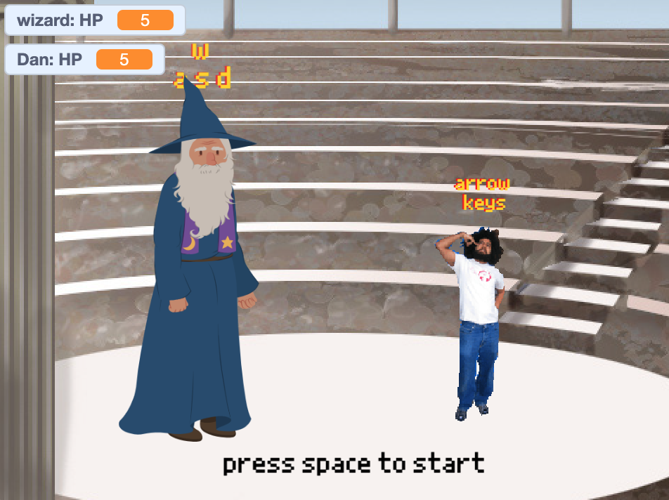

The second project I made was a small game using scratch. Scratch is another building block coding language, but it is much more open ended than Artist Lab. To play this game, download the file for the game from my GitHub and open it in the Scratch editor. Then press the green flag button.